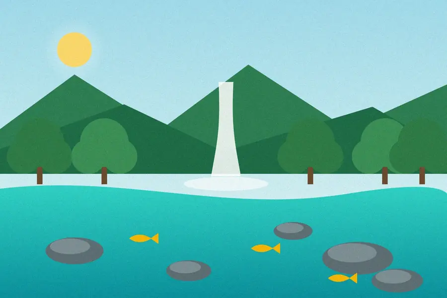

O que fazer em Bonito, MS

Flutuações
As flutuações mostram rios transparentes e vida aquática. Compare duração, deslocamento, idade mínima e equipamentos incluídos.
Grutas e cachoeiras
Combine atrações de ritmos diferentes. Trilhas podem exigir calçado fechado e condicionamento básico. Siga sempre as regras ambientais do local.
Quando reservar
As atrações controlam o número de visitantes. Em férias e feriados, faça reservas antecipadas e mantenha alternativas para mudanças climáticas.
Inclua o custo do transporte ao comparar passagens aéreas.